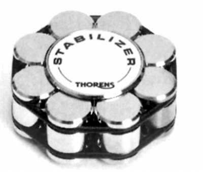
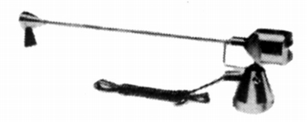

その他の製品
スタビライザー

■価格 12,000円■材質 真鍮クローム仕上げ ■外寸 径6.8×H2.8cm■重量 550g■備考 価格は1981年頃のもの2000年頃では20,000円
個人的に価格を考えなければ、スタビライザーの傑作だと思う。
アーム型クリーナー
Cieaner A

■価格 5,400円■備考 アーム型クリーナ。導電性を持ったブラシで静電気とほこりを同時に取り除く。
トーレンスのインデックスヘ